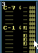

Volume columnやEffectの位置等はこちらを参照してください
指定する値は0からFの１６進数で設定します
不明な用語があったら用語集を参考にしてください
ボリュームコラムの設定
ボリューム関係
００〜４０ Ｖｏｌｕｍｅの大きさを数値の値に設定します
+０〜+Ｆ Ｖｏｌｕｍｅの大きさを数値の値だけ上げます 入力するＫｅｙは[-]
-０〜-Ｆ Ｖｏｌｕｍｅの大きさを数値の値だけ下げます 入力するＫｅｙは[/]
Ｕ０〜ＵＦ Ｖｏｌｕｍｅの大きさを数値の値だけ細かく上げます 表示は[△]
Ｄ０〜ＤＦ Ｖｏｌｕｍｅの大きさを数値の値だけ細かく下げます 表示は[▽]ビブラート関係
Ｓ１〜ＳＦ ビブラートの早さを数値の値に設定します
Ｖ０〜ＶＦ 指定した値の深さのビブラートを掛けますパン関係
Ｐ０〜ＰＦ 音の左右の定位を数値の値に設定します
Ｒ０〜ＲＦ 音の定位を右に移動させます 表示は[→]
Ｌ０〜ＬＦ 音の定位を左に移動させます 表示は[←]ポルタメント
つなぐ後半のＮｏｔｅと同時に挿入しないと効果がありませんＭ０〜ＭＦ 設定した値が１ｔｉｃｋに対する音の変化の量になります
使用例

エフェクトの設定
ボリューム関係
Ｇ，Ｈコマンドは曲全体を通して有効です
ＥＡ、ＥＢコマンドで拡張命令が出来ます
Ｃコマンド Ｓｅｔ Ｖｏｌｕｍｅ
Ａコマンド Ｖｏｌｕｍｅ Ｓｌｉｄｅ
Ｇコマンド Ｓｅｔ Ｇｌｏｂａｌ Ｖｏｌｕｍｅ
Ｈコマンド Ｇｌｏｂａｌ Ｖｏｌｕｍｅ Ｓｌｉｄｅ
Ｃｘｙ ｘｙ＝００〜４０ Ｖｏｌｕｍｅの大きさを数値の値に設定します
Ａｘｙ ｘ＝０〜Ｆ 設定した値だけ１ｔｉｃｋに対して音量が上下します
ｙ＝０〜Ｆ ｘの値が上がる量 ｙの値が下がる量です
Ｇｘｙ ｘｙ＝００〜４０ 曲全体のＶｏｌｕｍｅの大きさを数値の値に設定します
Ｈｘｙ ｘ＝０〜Ｆ 設定した値だけ１ｔｉｃｋに対して曲全体の音量が上下します
ｙ＝０〜Ｆ ｘの値が上がる量 ｙの値が下がる量です
ビブラート関係
Ｅ４コマンドが拡張命令が出来ます
４コマンド Ｖｉｂｒａｔｏ
６コマンド Ｖｉｂｒａｔｏ+Ｖｏｌｕｍｅ Ｓｌｉｄｅ
４ｘｙ ｘ＝０〜Ｆ ｘでビブラートの速さ
ｙ＝０〜Ｆ ｙでビブラートの深さを指定します
６ｘｙ ｘ＝０〜Ｆ ビブラートと音量の上下を同時に行います
ｙ＝０〜Ｆ ｘが音量の上がる量。ｙが音量が下がる量です
ビブラートの深さと速さは４コマンドで
予め指定された値を使用します
パン関係
８コマンド Ｓｅｔ Ｐａｎｎｉｎｇ
Ｐコマンド Ｐａｎｎｉｎｇ Ｓｌｉｄｅ
８ｘｙ ｘｙ＝００〜ＦＦ 指定した位置に音の定位を定めます
Ｐｘｙ ｘ＝０〜Ｆ 指定した値だけ音の定位をずらします
ｙ＝０〜Ｆ ｘの値が左方向 ｙの値が右方向になります
ポルタメント関係
３コマンドは基本的にＶｏｌｕｍｅＣｕｌｕｍｎのＭコマンドと使い方は同じです
Ｅ１、Ｅ２、Ｅ３、Ｘ１、Ｘ２コマンドで拡張命令が出来ます
１コマンド Ｐｏｒｔａｍｅｎｔｏ Ｕｐ
２コマンド Ｐｏｒｔａｍｅｎｔｏ Ｄｏｗｎ
３コマンド Ｔｏｎｅ-Ｐｏｒｔａｍｅｎｔｏ
５コマンド Ｔｏｎｅ-Ｐｏｒｔａｍｅｎｔｏ+Ｖｏｌｕｍｅ Ｓｌｉｄｅ
１ｘｙ ｘｙ＝００〜ＦＦ 指定した値だけ音程が上がります
２ｘｙ ｘｙ＝００〜ＦＦ 指定した値だけ音程が下がります
３ｘｙ ｘｙ＝００〜ＦＦ 指定した値の早さで対象となるＮｏｔｅに音程が近づきます
Ｅ３コマンドで音の変化の仕方を変えられます
５ｘｙ ｘ＝０〜Ｆ ポルタメントとＶｏｌｕｍｅＳｌｉｄｅを同時に行います
ｙ＝０〜Ｆ ｘが音量の上がる量。ｙが音量が下がる量です
ポルタメントの速さは３コマンドで予め指定した値を使用します
アルペジオ
０コマンド
０ｘｙ ｘ＝０〜Ｆ 和音を分散して演奏します
ｙ＝０〜Ｆ Ｎｏｔｅの音程を基準に ｘ*半音上 ｙ*半音上の音を
１ｔｉｃｋ毎に順番に演奏します
トレモロ
Ｅ７コマンドで拡張命令が出来ます
７コマンド
７ｘｙ ｘ＝０〜Ｆ ｙ＝０〜Ｆ ｘでトレモロの速さ ｙでトレモロの深さを指定します
テンポ/スピード
曲を通して有効です
Ｆコマンド
Ｆｘｙ ｘｙ＝０〜１９、２０〜ＦＦ ０−１９の範囲で曲のｓｐｅｅｄを
２０−ＦＦの範囲で曲のＢＰＭを設定します
トレマー
Ｔコマンド
Ｔｘｙ ｘ＝０〜Ｆ ｙ＝０〜Ｆ ｘの値が発音時間 ｙの値が消音時間になります
ジャンプ
Ｅ６コマンドでパターンのループの設定が出来ます
Ｂコマンド Ｐｏｓｉｔｉｏｎ Ｊｕｍｐ
Ｄコマンド Ｐａｔｔｅｒｎ Ｂｒｅａｋ
Ｂｘｙ ｘｙ＝００〜ＦＦ 設定された値の演奏番号にジャンプします
Ｄｘｙ ｘｙ＝００〜ＦＦ 次に演奏されるパターンの設定されたラインへジャンプします
拡張コマンド
Ｅ１コマンド Fine Portamento Up
Ｅ２コマンド Fine Portamento Down
Ｅ３コマンド Ｓｅｔ ｇｌｉｓｓａｎｄｏ Ｃｏｎｔｒｏｌ
Ｅ４コマンド Ｓｅｔ Ｖｉｖｒａｔｏ Ｃｏｎｔｒｏｌ
Ｅ５コマンド Ｓｅｔ Ｆｉｎｅ Ｔｕｎｅ
Ｅ６コマンド Ｐａｔｔｅｒｎ Ｌｏｏｐ
Ｅ７コマンド Ｓｅｔ Ｔｒｅｍｏｌｏ Ｃｏｎｔｒｏｌ
Ｅ９コマンド Ｒｅｔｒｉｎｇ ｎｏｔｅ
ＥＡコマンド Ｆｉｎｅ Ｖｏｌｕｍｅ Ｓｌｉｄｅ Ｕｐ
ＥＢコマンド Ｆｉｎｅ Ｖｏｌｕｍｅ Ｓｌｉｄｅ Ｄｏｗｎ
ＥＣコマンド Ｎｏｔｅ Ｃｕｔ
ＥＤコマンド Ｎｏｔｅ Ｄｅｌｅｙ
ＥＥコマンド Ｐａｔｔｅｒｎ Ｄｅｌｅｙ
Ｘ１コマンド Ｅｘｔｒａ ｆｉｎｅ Ｐｏｒｔａｍｅｎｔ ｕｐ
Ｘ２コマンド Ｅｘｔｒａ ｆｉｎｅ Ｐｏｒｔａｍｅｎｔ ｄｏｗｎ
Ｅ１ｘ ｘ＝０〜Ｆ 指定した値だけ音程を細かく上げます
Ｅ２ｘ ｘ＝０〜Ｆ 指定した値だけ音程を細かく下げます
Ｅ３ｘ ｘ＝０，１ ｘ＝１に設定すると３コマンドを用いた時に時に音の変化が
滑らかではなく半音づつ変化するようになります
Ｅ４ｘ ｘ＝０，１，２ ビブラートの波形を設定します。０正弦波、１三角波、２矩形波となります
Ｅ５ｘ ｘ＝０〜５、７〜１２ Ｎｏｔｅと同時に使用して音程を細かく変えます。
Ｎｏｔｅと同時ではないと効果がありません
Ｅ６ｘ ｘ＝０，１〜Ｆ 指定した回数だけパターンのループを行います。同一ループ上でのみ有効です
ｘ＝０でループの始点を指定します。
Ｅ７ｘ ｘ＝０，１，２ トレモロの波形を設定します。０正弦波、１三角波、２矩形波となります
Ｅ９ｘ ｘ＝０〜Ｆ 指定した値*Ｔｉｃｋ後に現在のＮｏｔｅを再び演奏します
ＥＡｘ ｘ＝０〜Ｆ 指定した値だけ音量を上げます
ＥＢｘ ｘ＝０〜Ｆ 指定した値だけ音量を下げます
ＥＣｘ ｘ＝０〜Ｆ 指定した値*Ｔｉｃｋ後に音量を０にします。
ＥＤｘ ｘ＝０〜Ｆ 指定した値*ＴｉｃｋだけＮｏｔｅの発音が遅れます。
ＥＥｘ ｘ＝０〜Ｆ 指定した値だけパターンの進行が止まります
Ｘ１ｘ ｘ＝０〜４，５〜Ｆ 指定した値だけ音程を細かく上げます。
ただし０〜４が速度の指定になります
Ｘ２ｘ ｘ＝０〜４，５〜Ｆ 指定した値だけ音程を細かく下げます。
ただし０〜４が速度の指定になります
その他
９コマンド Ｓｅｔ Ｓａｍｐｌｅ Ｏｆｆ Ｓｅｔ
Ｌコマンド Ｓｅｔ Ｅｎｖｅｌｏｐｅ Ｐｏｔｉｔｉｏｎ
Ｒコマンド Ｍｕｌｔｉ ｒｅｔｒｉｎｇ
９ｘｙ ｘｙ＝０１〜ＦＦ サンプルの演奏開始位置をｘｙ＊２５６の位置に変更します
Ｌｘｙ ｘｙ＝００〜ＦＦ Ｅｎｖｅｌｏｐｅの開始位置を指定した値に変更します
Ｒｘｙ ｘ＝０〜Ｆ xがボリュームの変化の量を表します。変化の量は下記参照
ｙ＝０〜Ｆ yで指定した値の間隔毎に現在のＮｏｔｅを再び演奏しますVolumeの変化
0 = 無し
1 = -1
2 = -2
3 = -4
4 = -8
5 = -16
6 = *2/3
7 = *1/2
8 = 未使用
9 = +1
A = +2
B = +4
C = +8
D = +16
E = *3/2
F = *2